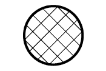

УКАЗАНИЯ ПО ВЫПОЛНЕНИЮ РЕМОНТА > ПОДЪЕМ АВТОМОБИЛЯ И РАСПОЛОЖЕНИЕ ТОЧЕК ПОДДОМКРАЧИВАНИЯ |
| ЗАМЕЧАНИЯ ПО СОСТОЯНИЮ АВТОМОБИЛЯ ПРИ ЕГО ПОДЪЕМЕ |
Перед поддомкрачиванием или подъемом автомобиль должен быть разгружен. Никогда не поднимайте и не поддомкрачивайте тяжело загруженный автомобиль.
Установите домкрат и опоры точно под указанные точки автомобиля.
Ни в коем случае не пытайтесь поддомкрачивать и поднимать автомобиль, если его масса превосходит заданную грузоподъемность используемого оборудования.
При подъеме автомобиля сначала поднимите его немного и слегка потрясите, чтобы убедиться в устойчивости, перед подъемом в требуемое положение.
Перед тем, как снимать домкрат, подбейте с помощью молотка или аналогичного инструмента опоры, чтобы убедиться в надлежащей поддержке автомобиля.
При использовании подъемника всегда опускайте автомобиль, когда работы не производятся.
При снятии каких-либо тяжелых узлов, например, двигателя или трансмиссии, центр масс автомобиля смещается. Чтобы уравновесить автомобиль, установите противовес в месте, где он будет препятствовать смещению и переворачиванию автомобиля, либо установите телескопический гидравлический домкрат под соответствующей точкой поддомкрачивания с противоположной стороны автомобиля.
| ЗАМЕЧАНИЯ ПО ИСПОЛЬЗОВАНИЮ ПОДЪЕМНИКА НА 4 СТОЙКАХ |
Соблюдайте правила техники безопасности, указанные в руководстве по эксплуатации подъемника.
Примите меры, чтобы не повредить шины и колеса при въезде на подъемник.
Чтобы зафиксировать автомобиль, установите под колеса колодки.
| ЗАМЕЧАНИЯ ПО ИСПОЛЬЗОВАНИЮ ОПОР И ДОМКРАТА |
Производите работы на ровной поверхности. Всегда устанавливайте колодки под колеса.
Используйте опоры с резиновыми накладками, как показано на рисунке.
Установите домкрат и опоры точно под указанные точки автомобиля.
Запрещается выполнять какие-либо работы или оставлять автомобиль, если он опирается только на домкрат. Обязательно подставьте под автомобиль опоры.
При поддомкрачивании автомобиля в первую очередь отпустите стояночный тормоз и переведите рычаг переключения передач в положение N.
При поддомкрачивании автомобиля целиком:
Если вначале поддомкрачиваются передние колеса, позади задних колес обязательно должны быть установлены колодки.
Если вначале поддомкрачиваются задние колеса, колодки обязательно должны быть установлены перед передним колесами.
При поддомкрачивании только передних или только задних колес автомобиля:
Перед поддомкрачиванием передних колес установите колодки по обеим сторонам задних колес.
Перед поддомкрачиванием задних колес установите колодки по обеим сторонам передних колес.
При опускании автомобиля, у которого поддомкрачены только передние или только задние колеса.
|  |
|
|
 |
| - |
Перед опусканием передних колес удостоверьтесь, что перед задними колесами установлены колодки.
Перед опусканием задних колес удостоверьтесь, что за передними колесами установлены колодки.